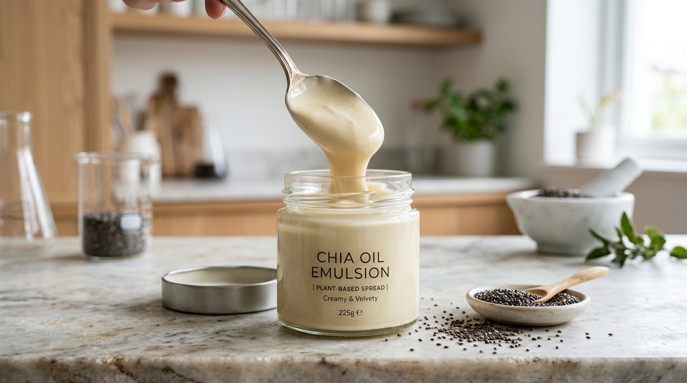
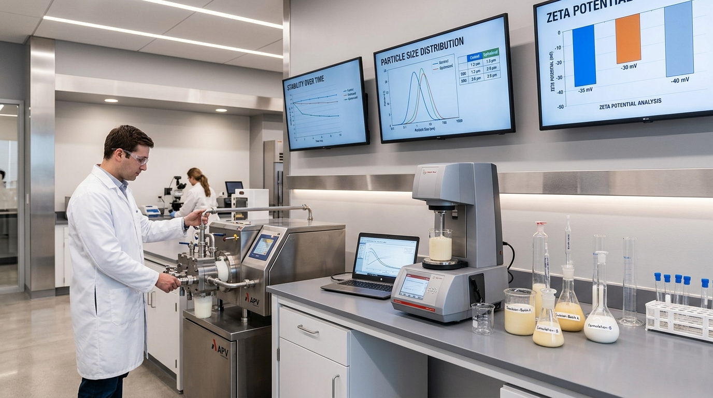
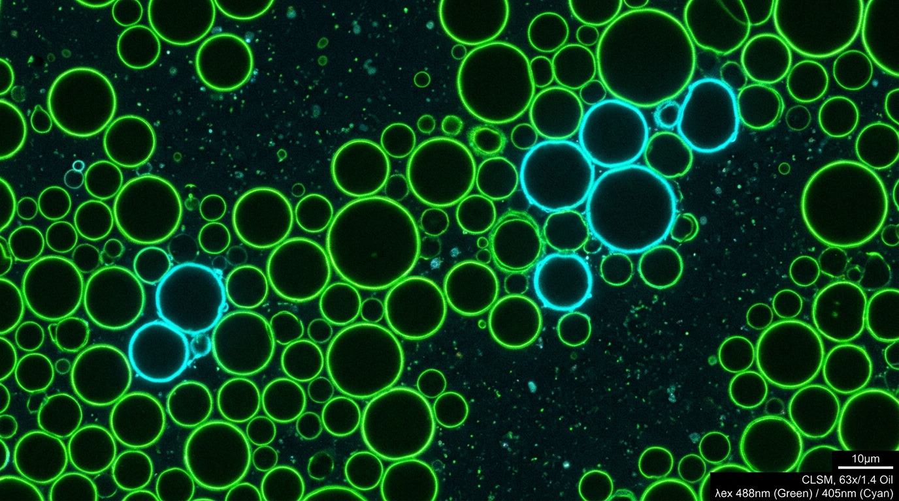

Predicción y Formulación Inteligente de Emulsiones Alimentarias
Evalúa en tiempo real riesgos de cremado, floculación por puente o depleción y coalescencia interfacial. Diseñado para formuladores, científicos de alimentos y plantas agroindustriales con rigor fisicoquímico, leyes de Stokes y electrocinética DLVO.
< 0.85 µm
Tamaño d32 con homogeneización a 20+ MPa
+300%
Estabilidad cinética frente a separación de fases
0%
Sinéresis visual con balance de hidrocoloides
Consola del Asistente de Estabilidad
Interactúa directamente con el motor inteligente de emulsion-stability-assistant. Selecciona una formulación preconfigurada o redacta tu propia consulta técnica.
Laboratorio Interactivo de Estabilidad Coloidal
Simula el comportamiento físico de gotas en suspensión bajo diferentes presiones de homogeneización, dosificaciones de hidrocoloide y pH relativo al punto isoeléctrico (pI).
Parámetros de Formulación
Microscopio Óptico & Telemetría
Los 4 Mecanismos de Desestabilización
Cómo el asistente emulsion-stability-assistant modela matemáticamente los fenómenos coloidales descritos por McClements, Dickinson y la teoría DLVO.
Cremado y Sedimentación
Migración vertical de las gotas impulsada por la diferencia de densidad ($\Delta\rho$) entre la fase oleosa ($\approx 915-925\ kg/m^3$) y la fase acuosa continua ($\approx 1000\ kg/m^3$). Se frena drásticamente disminuyendo el diámetro de gota ($d^2$) o generando un esfuerzo de fluencia ($\tau_0$) mediante polisacáridos.
v = 2 r² (ρc - ρd) g / (9 ηc)
Floculación por Puenteo y Depleción
Unión de gotas sin ruptura interfacial. Ocurre por: 1) Depleción: cuando el exceso de polímero no adsorbido genera una presión osmótica atractiva que empuja las gotas entre sí. 2) Carga Isoeléctrica: cuando el pH se aproxima al punto isoeléctrico de las proteínas ($|\zeta| < 15\ mV$), suprimiendo la repulsión electrostática.
VT = V_van_der_Waals + V_electrostático
Coalescencia y Rotura Interfacial
Fusión irreversible de dos o más gotas en una gota mayor, culminando en la separación completa en dos fases líquidas continuas (aceite libre visible). Es provocada por deficiencia de emulsificante ($\Gamma < \Gamma_{sat}$) o baja elasticidad dilatacional del film interfacial viscoelástico.
Γ = C_proteína / (6 Φ / d32) ≥ Γ_sat
Maduración de Ostwald
Crecimiento progresivo de gotas grandes a expensas de las pequeñas debido a la mayor presión de Laplace en gotas diminutas, lo que crea un gradiente de solubilidad química a través de la fase continua. Es especialmente crítico en fases lipídicas con solubilidad parcial en agua (ej. aceites esenciales, MCT o aromas).
ΔP = 2γ / r (r_pequeña < r_grande)
Formulaciones Optimizadas por el Asistente
Resultados de laboratorio y planta piloto validados con microscopía láser confocal, analizadores de dispersión estática de luz y reología oscilatoria.

Plant-Based SpreadCrema Untable de Chía & Soya (Omega-3)
El caso planteado en la consulta oficial del skill: emulsión O/W con 25% de aceite de chía, 3% aislado de soya (SPI) y 0.2% xantana a pH 6.2 homogeneizada a 20 MPa. Ausencia total de cremado a 90 días con protección oxidativa integral.

Planta Piloto 4.0Escalamiento en Homogeneizador de Alta Presión
Optimización de etapas mecánicas (25 MPa en primera etapa / 5 MPa en segunda etapa desaglomerante). Reducción del polidispersity index (PDI) a menos de 0.18 y minimización del consumo energético por lote.

Biofísica de InterfasesCaracterización Estructural por CLSM
Visualización con tinción fluorescente diferencial de la fase lipídica interna (verde Nile Red) y la corteza interfacial de biopolímero proteico (azul Calcofluor / FITC). Comprobación de integridad de membrana.
Método Tradicional vs. Emulsion Assistant
Cómo la simulación predictiva con emulsion-stability-assistant transforma meses de formulación por ensayo y error en decisiones fisicoquímicas inmediatas.
| Parámetro de Desarrollo | Formulación Tradicional (Ensayo & Error) | Con emulsion-stability-assistant |
|---|---|---|
| Tiempo de Diagnóstico de Riesgo | 30 a 90 días en cámaras de estabilidad a 20°C/40°C | Inmediato (< 2 segundos) |
| Prevención de Floculación por Depleción | Frecuente sobredosificación de hidrocoloides por miedo al cremado | Cálculo exacto del umbral crítico C* |
| Selección de pH vs Punto Isoeléctrico | Ignorado hasta que se produce precipitación en lote piloto | Cálculo electrocinético de potencial zeta y DLVO |
| Gasto en Lotes de Prueba & Materia Prima | 15 - 30 ensayos de planta con mermas de 50-100 kg cada uno | 2 - 3 corridas de validación confirmatoria |
| Optimización de Presión de Homogeneizador | Ajuste empírico (suele operar a máxima presión innecesariamente) | Curva de potencia d32 vs energía mecánica |
Preguntas Frecuentes de Científicos de Alimentos
Respuestas a las dudas más comunes sobre físico-química coloidal, reología y uso del skill.